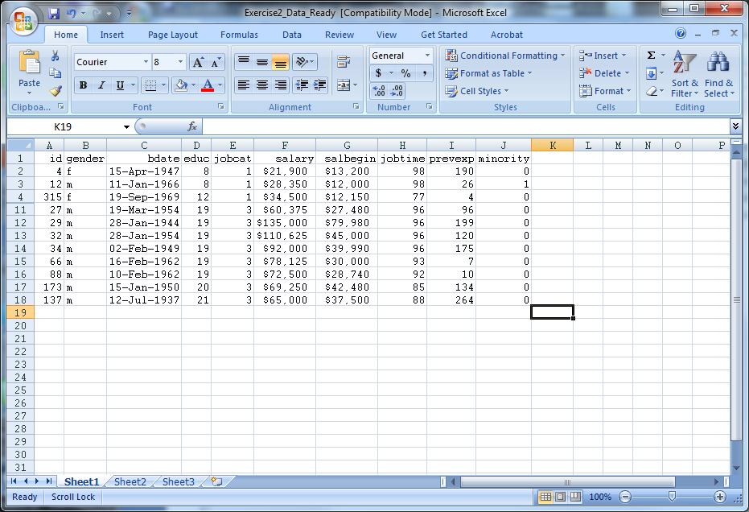
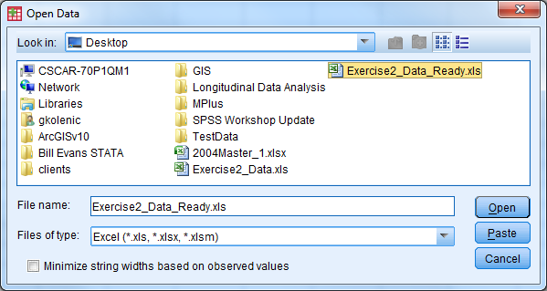

Chapter 3 # Exercise 2 Solution
Open Exercise2_Data (an Excel file). Modify this Excel file such that it can be imported into SPSS properly. Save the file and close it. Open the file in SPSS (import it). Export this file back into Excel, but only save the following variables: id, salary, minority.

Solution:
Delete the first three rows of data (remove heading)
Remove rows 23 and 24 (contains summary information)
Remove the formatting (fill color)
Save the file as Exercise2_Data_Ready
Close Exercise2_Data_Ready

Open SPSS
Select File - Open - Data
Under “Files of Type” select either “All Files” or “Excel” to view Exercise2_Data_Ready, select the file, then select “Open”
A window appears
Check the box so the variable names will be imported
Select the sheet of the Excel file that you would like to be read in, then select “Ok”
The Excel data should now open in the Data Editor


Delete any “blank” rows of data or columns of data (indicated by “.”) by highlighting, right click, select “cut”
Select File - Save As
Let the file name be Exercise2_Data_Ready_short
Change the file type to Excel 97 through 2003 (*.xls)
Select the “Variables…” button
Select the “Drop All” button
Under the “Keep” column, check the box for id, salary, minority
Select “Continue”
Select “Save”
Open the new file (Exercise2_Data_Ready_short) to investigate the results